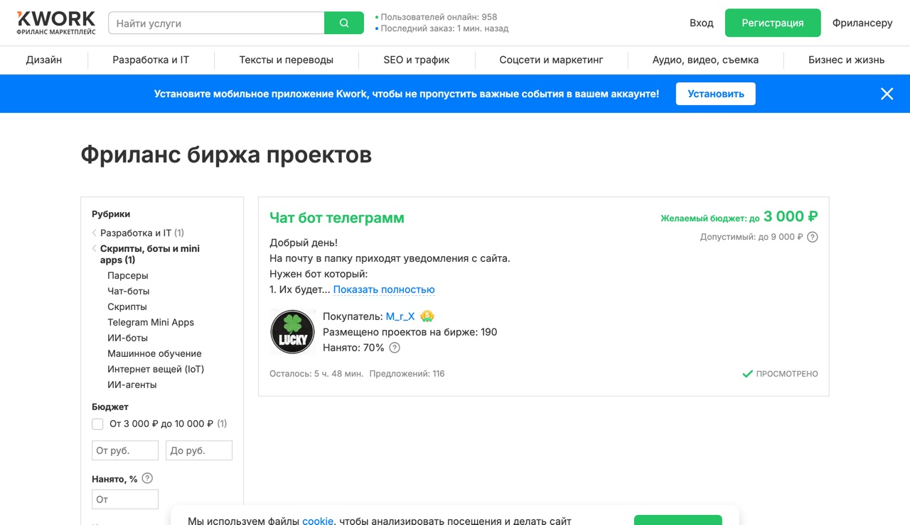

Первые заказы берут одним готовым демо и скоростью отклика. Резюме и опыт спрашивают уже после того, как увидели работающую штуку.
Ниже воронка из трёх каналов, честные цены рынка со скринами и шаблон первого сообщения. Начни с одной ниши, которую закроешь за вечер: бот с ответами на частые вопросы, лендинг на Tilda, карточки для WB и Ozon или пакет текстов.
Инструменты
Инструменты
ChatGPT
chatgpt.com
Тексты, описания услуг, отклики и картинки для карточек. Всё в одном окне.
Salebot
salebot.pro
Чат-бот без кода, если клиенту нужен именно бот. Бесплатный тариф закрывает демо.
GitHub Pages
pages.github.com
Бесплатно выложить готовый сайт по ссылке, чтобы показать клиенту. Карта не нужна.
BotHub
bothub.chat
Если нет VPN: российский агрегатор к GPT и Claude, оплата картой МИР.
Проверь текущий план
Пакет дороже одной услуги
Лендинг плюс бот на нём плюс настроенная реклама продаются как одна связка под ключ и стоят кратно дороже отдельного бота. Начинать проще с бота, а связку держать как второй шаг для того же клиента.
Tilda: бесплатный тариф на один сайт закрывает демо для клиента
Портфолио
Демо за вечер вместо кейсов
Возьми реальный бизнес у дома: кофейня, барбершоп, автосервис, стоматология. Собери бота, который отвечает на четыре вопроса: цена, адрес, часы работы, как записаться. Запиши экран и сделай 3-4 скрина, это и будет витрина.
Telegram · демо-бот кофейни
Привет! Подскажу цены, адрес и часы ☕ Что интересно?
Меню и ценыГде выЧасы работы
Сколько стоит капучино?
Капучино 250 ₽, большой 320 ₽. Есть на овсяном и без лактозы 🥛
Во сколько открываетесь?
Каждый день с 8:00 до 22:00, Ленина 12 📍
Демо под конкретную нишу собирается за вечер и заменяет портфолио
Называй это учебным демо
Выдашь за оплаченный кейс, первый же вопрос клиента вскроет ложь. Демо под их сферу продаёт и без вранья.
Каналы
Где сидят заказчики
1
Биржи, чтобы набить руку
Продавцом на
kwork.ru и исполнителем на
profi.ru. Создай 3-5 кворков от 500 рублей: «соберу чат-бота», «сделаю лендинг за день», «сгенерирую 10 карточек WB». В описание вставь скрины и видео демо. Комиссию площадки закладывай в цену.
2
Телеграм-чаты с заказами
Заказы падают в реальном времени, забирает тот, кто ответил первым. Ищи по запросам «фриланс заказы», «биржа копирайтинга», «чат вакансий SMM». Для старта спокойнее чаты для начинающих, там встречаются оплачиваемые стажировки. Работу вперёд без предоплаты не делай.
3
Локальный бизнес у дома
Раздел «Предложения услуг» на Авито плюс живой обход. Напиши или зайди к 5-10 точкам рядом и покажи демо под их сферу. Здесь чек выше и конкурентов нет, в отличие от бирж.
kwork.ru/projects

Живой заказ с биржи: бюджет до 3 000 ₽ и 116 откликов на одно место
Почему биржа это тренажёр, а не источник дохода
На скрине выше реальная картина: за бота предлагают до 3 тысяч, желающих больше сотни. Отзывы там набирать удобно, а деньги начинаются у локального бизнеса, где ты приходишь с готовым демо и конкурируешь сам с собой.
Профи.ру: заказы приходят подборкой, откликаешься первым
Первое сообщение
Шаблон, который открывают
Здравствуйте! Увидел, что вам нужен бот. Я как раз собираю такие, вот короткое демо похожего проекта: [ссылка]. За 1-2 дня сделаю бота, который отвечает на вопросы о цене и адресе и записывает клиентов. Готов сначала бесплатно показать черновой вариант под вашу задачу, понравится, обсудим оплату. Когда удобно созвониться на 5 минут?
Что здесь работает
Одно конкретное предложение вместо списка услуг. Демо прямо в первом сообщении. Бесплатный первый шаг снимает риск для клиента. Вопрос в конце вытягивает ответ.
Деньги
Цены и сроки без сказок
| Этап | Цена |
|---|
| Первые 2-3 заказа за отзыв | 1000-2000 ₽ |
| Простой бот с ответами | от 5000 ₽ |
| Настройка ассистента | 15-40к |
| Лендинг и пакеты текстов | 3-10к |
| Поддержка бота, абонентка | 5-25к в месяц с клиента |
| Автоматизация на Make или n8n | 30-80к |
Абонентка важнее разовых заказов: десять клиентов на поддержке дают 50-150к фоном, пока ты собираешь новые проекты. Поэтому после сдачи сразу предлагай сопровождение.
Про сроки
Первые клиенты приходят за 2-3 месяца системного поиска. Первый вечер уйдёт на демо. Бесплатные тарифы упрутся в лимиты: боевому боту нужен платный Salebot, домен для сайта клиента тоже платный. Это строка в счёте, а не повод стопориться.
Куда это приводит
Путь один: демо, первые дешёвые заказы, отзывы, локальные клиенты, сопровождение. Через несколько месяцев один проект закрывается платежом вроде этого.
Артём, 49 лет, до этого больше десяти лет работал на складе и курьером
Каждый закрытый заказ превращай в кейс: скрин плюс результат, и клади в портфолио на Kwork и в свой телеграм. Через месяц-два отзывы начинают приводить клиентов сами.